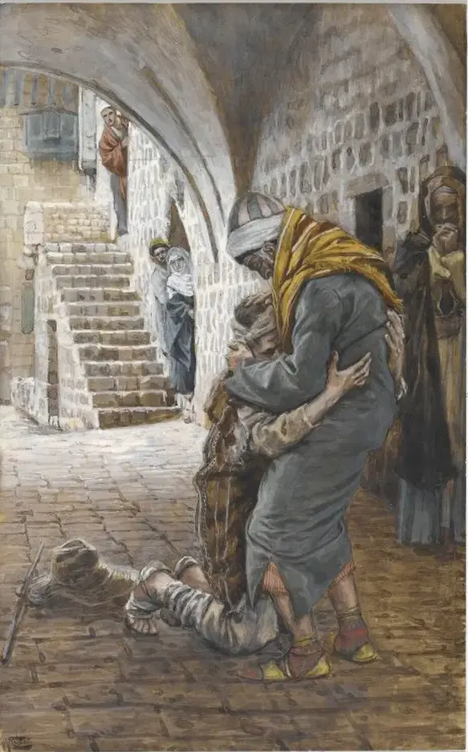
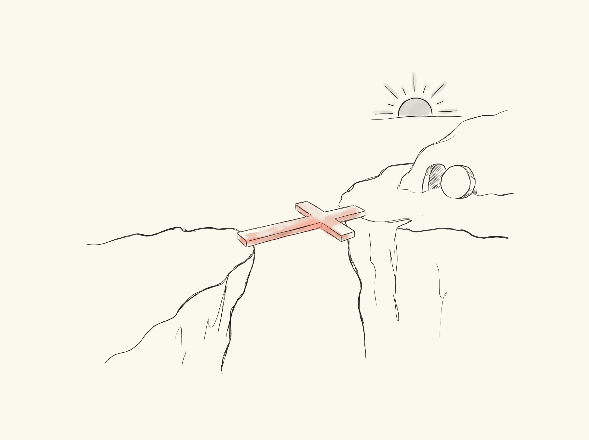
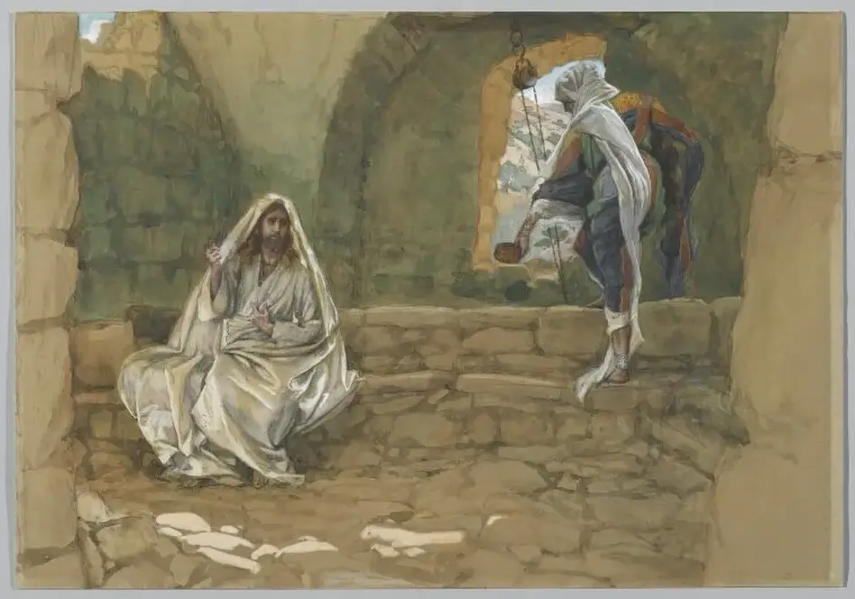
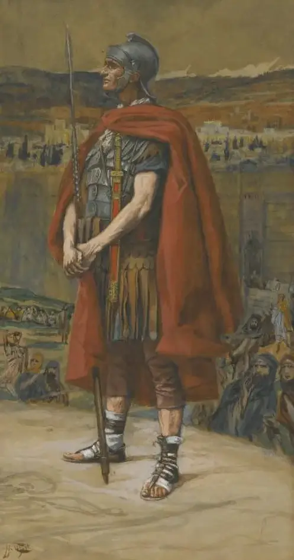
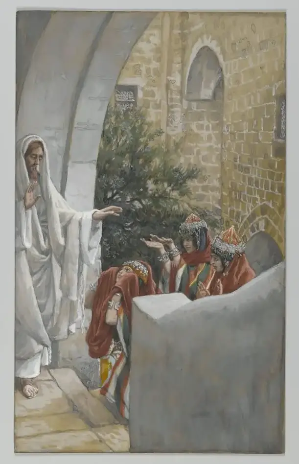
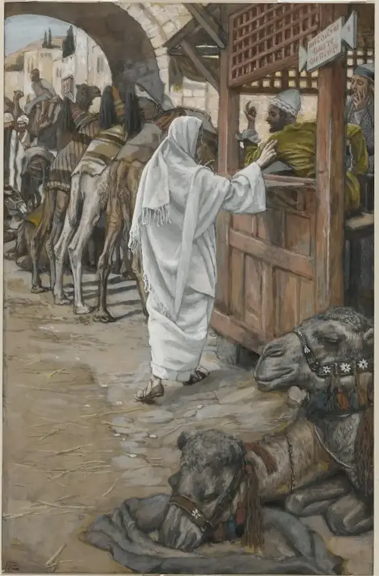
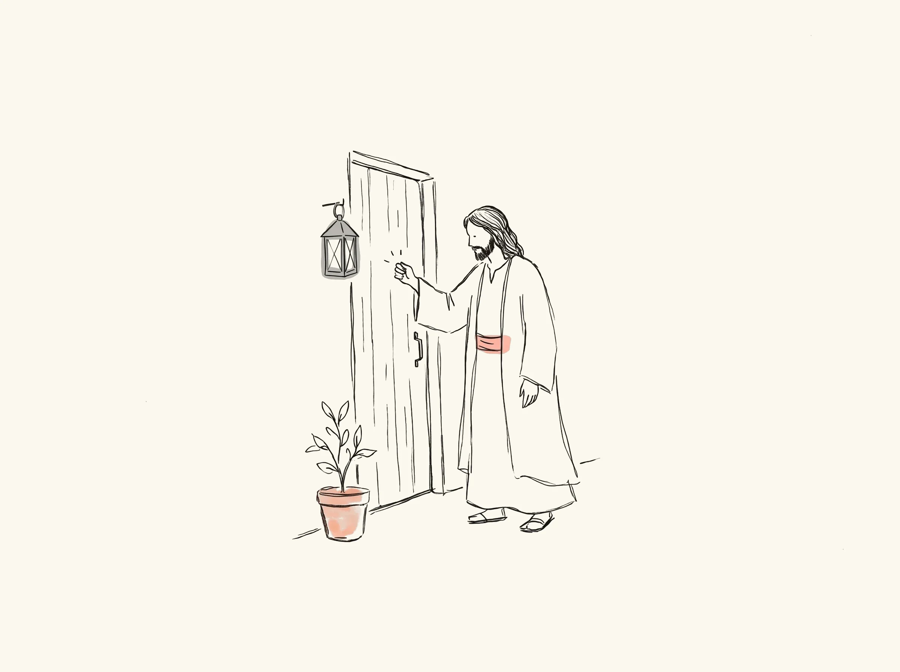

왜 기독교인가
이기려는 글이 아니라, 함께 찾아가는 글
종교를 견주는 글은 자칫 다른 사람의 믿음을 깎아내리기 쉽습니다. 이 글은 그러지 않으려 합니다. 다른 종교를 믿는 분들도 저마다 진지하게 길을 찾는 이웃입니다. 그래서 기독교에 묻는 질문을 다른 종교에도 똑같이 묻고, 각 종교는 그 종교가 스스로 하는 말로 소개합니다.
사람일까?
어떻게 씻길까?
무엇이 있을까?
누구나 마음 깊은 곳에 품고 사는 물음입니다. 종교들은 이 물음에 저마다 답해 왔습니다. 그 답들을 한 가지 잣대로 나란히 놓아 보겠습니다. 구원은 누가 하는가. 사람이 하는가, 하나님이 하는가.
하나올라가는 길과 내려오는 길
종교를 흔히 "같은 산꼭대기로 오르는 여러 길"에 빗댑니다. 실제로 많은 종교가 사람이 닦고, 지키고, 쌓아서 올라가는 길을 가르칩니다. 그 길에는 진지함과 아름다운 절제가 있습니다.
그런데 기독교는 방향이 반대입니다. 사람이 올라가기 전에 하나님이 먼저 내려오셨다고 말합니다. 기독교가 다른 종교와 가장 크게 갈리는 곳이 바로 여기입니다.
여러 종교를 한 줄 위에 놓으면
왼쪽은 사람이 하는 몫이 큰 쪽, 오른쪽은 하나님(신)이 하는 몫이 큰 쪽입니다. 이름을 누르면 풀이가 열립니다.
불교
- 문제
- 집착과 무지에서 오는 괴로움, 끝없는 윤회
- 목표
- 열반, 괴로움과 윤회가 끝남
- 할 일
- 여덟 가지 바른길(팔정도), 계율, 명상. 붓다는 마지막에 "스스로를 등불로 삼으라"고 했습니다 (상좌부 불교 기준)
유교
- 문제
- 덕이 모자라고 마음이 바르지 않음
- 목표
- 군자, 성인. 구원보다는 사람됨에 가깝습니다
- 할 일
- 몸과 마음을 닦음(수신), 예를 지킴, 배움
힌두교
- 문제
- 업(카르마)에 묶여 되풀이되는 삶, 참 자아를 모름
- 목표
- 해탈(목샤)
- 할 일
- 행위의 길, 지혜의 길, 헌신의 길. 갈래가 넓어서, 헌신의 길로 갈수록 신의 은총을 크게 말합니다
이슬람
- 문제
- 하나님을 잊고 따르지 않음
- 목표
- 심판을 지나 낙원에 들어감
- 할 일
- 신앙 고백, 하루 다섯 번의 기도, 구제, 금식, 순례(다섯 기둥). 심판 날 행위를 저울에 단다고 가르칩니다(꾸란 7:8–9). 마지막은 알라의 자비에 달렸습니다
유대교
- 문제
- 하나님의 뜻을 따르지 않음
- 목표
- 하나님과 맺은 언약 안에 머묾
- 할 일
- 율법을 지키고, 어겼을 때 돌이킴(테슈바). 언약은 은혜로 주어지고, 그 안에 머무는 것은 순종에 달렸습니다
정토 불교
- 문제
- 말세라 사람의 힘으로는 깨달을 수 없음
- 목표
- 아미타불의 극락에 태어남
- 할 일
- 아미타불의 이름을 부르고 그 서원을 믿음. 남의 힘에 기대는 신앙(타력)입니다
기독교
- 문제
- 죄, 하나님과 끊어짐
- 목표
- 하나님과 다시 이어짐, 영원한 생명
- 할 일
- 하나님이 이미 하신 일을 믿음으로 받음. 믿음은 공로가 아니라 선물을 받으려고 내미는 빈손입니다
점의 자리는 각 종교의 대표적인 가르침을 기준으로 한 대략의 위치입니다. 한 종교 안에도 여러 갈래가 있습니다.
둘달려오는 아버지

예수께서 들려주신 이야기가 있습니다. 아버지의 재산을 미리 받아 떠난 아들이 다 탕진하고 돌아옵니다. 그는 집으로 오는 길에 할 말을 연습합니다. "이제 아들이라 불릴 자격이 없습니다. 품꾼으로라도 써 주십시오." 일해서 갚겠다는 것입니다.
그런데 아버지는 그 말을 끝까지 듣지도 않습니다. 멀리서 아들을 알아보고 먼저 달려가 끌어안습니다.
아들이 연습한 말은 '올라가는 길'입니다. 아버지가 달려간 것은 '내려오는 길'입니다. 기독교가 말하는 하나님은 사람이 자격을 갖추어 올라오기를 기다리는 분이 아니라, 먼저 달려오는 아버지입니다.
셋사랑과 공의가 만나는 곳
"그냥 용서해 주시면 되지 않나요?" 하고 물을 수 있습니다. 하지만 누가 내 가족을 해쳤는데 재판관이 "괜찮다" 하고 그냥 풀어 준다면, 그것을 사랑이라고 부르기는 어렵습니다. 잘못을 그냥 덮으면 정의가 무너집니다. 그렇다고 그대로 벌하면 사랑이 설 자리가 없습니다.
오래전부터 전해 오는 이야기가 있습니다.
법은 지켜졌고, 아들은 풀려났습니다. 공의와 사랑이 함께 이루어졌습니다. 기독교는 십자가가 바로 이런 일이라고 말합니다.

용서받은 잘못의 값은 어디로 가는가
은혜를 말하는 종교는 기독교만이 아닙니다. 정토 불교, 힌두교 헌신의 길, 이슬람도 신의 자비를 말합니다. 그런데 이 물음에는 서로 다르게 답합니다.
이야기가 아니라 일어난 일
하나가 더 있습니다. 기독교는 이것을 아득한 옛날의 신화나 깨달음의 비유로 말하지 않습니다. 때와 장소가 있는 사건이라고 말합니다. 그래서 역사로 따져 볼 수 있고, 기독교는 오히려 그 사건에 모든 것을 겁니다.
이 앱이 복음서를 지도 위에 펼쳐 놓은 까닭도 여기에 있습니다. 이 이야기는 실제 땅, 실제 길 위에서 일어난 일이기 때문입니다.
넷기독교는 배타적인가요?
기독교에 대해 가장 많이 듣는 말입니다. 먼저 솔직하게 인정할 것이 있습니다. 그렇게 느껴진 데에는 그리스도인들의 차가운 말과 행동이 한몫했습니다. 역사 속에서도, 오늘의 거리에서도 그랬습니다. 그것은 예수의 모습이 아니었습니다. 미안한 일입니다.
그러면 예수 자신은 어떠셨을까요? 기독교의 가르침은 정말 문을 닫는 가르침일까요?
하나뿐인 길, 그러나 가장 넓은 문
예수는 "나는 길이요 진리요 생명이다. 나를 통하지 않고는 아무도 아버지께 갈 수 없다"(요 14:6)고 말씀하셨습니다. 길이 하나라는 말은 좁게 들립니다. 그런데 그 길에 들어가는 조건을 보면 이야기가 달라집니다.
선행이나 수행으로 들어가는 길이라면, 착하게 살 여유가 있는 사람, 오래 닦을 시간이 있는 사람이 앞섭니다. 하지만 은혜로 들어가는 길에는 자격이 없습니다. 민족도, 학력도, 지난 삶도 묻지 않습니다. 범죄자도, 늦게 온 사람도, 죽음을 앞둔 사람도 같은 문으로 들어갑니다. 예수 곁 십자가에 달린 강도도 그랬습니다(눅 23:43). 길은 하나지만, 문은 누구에게나 열려 있습니다.
예수가 먼저 찾아간 사람들
예수는 당시 사람들이 그어 놓은 선을 자주 넘으셨습니다. 다른 민족, 다른 신앙, 손가락질받던 사람에게 먼저 다가가셨습니다.

사마리아 여인서로 상종하지 않던 민족, 다른 예배 처소. 대낮에 홀로 물 길러 온 여인
로마 백부장나라를 점령한 군대의 장교. 예수는 그의 믿음을 칭찬하셨습니다
가나안 여인이방 땅의 어머니. 아픈 딸을 위한 간청을 들어주셨습니다
세리 마태민족을 판 사람이라 불리던 세리. 제자로 부르셨습니다그림: 제임스 티소 · 브루클린 미술관 · 퍼블릭 도메인. 누르면 앱의 그 장면으로 갑니다.
불이 난 건물에서
불이 난 건물에서 비상구를 아는 사람이 "이쪽입니다!" 하고 외친다면, 우리는 그를 오만하다고 하지 않습니다. 출구가 하나뿐일수록 더 크게 외치는 것이 사랑입니다. 그리스도인이 예수를 전하는 마음도 이와 같아야 합니다. 이기려는 마음이 아니라, 함께 살고 싶은 마음입니다.
모든 종교는 무언가를 참이라고 말한다
공정하게 보면 '하나의 진리'를 말하는 것은 기독교만이 아닙니다. 불교는 영원한 자아가 없다고 가르치고, 이슬람은 예수가 십자가에서 죽지 않았다고 가르칩니다(꾸란 4:157). 서로 맞서는 주장이라 모두가 동시에 옳을 수는 없습니다. "모든 종교는 다 같다"는 말도 사실 하나의 주장입니다. 그러니 문제는 진리를 말하느냐가 아니라, 어떤 마음으로 말하느냐입니다.
문 밖에서 두드리시는 분

성경이 그리는 예수는 문을 부수고 들어오지 않으십니다. 밖에서 두드리고 기다리십니다. 사랑은 억지로 열게 하지 않기 때문입니다.
그래서 그리스도인은 다른 믿음을 가진 이웃을 존중해야 합니다. 성경은 신앙을 전할 때에도 "온유하고 존중하는 마음으로" 하라고 가르칩니다(벧전 3:15–16). 원수까지 사랑하라고 하신 분을 따르는 사람이, 다른 길을 걷는 이웃을 미워할 수는 없습니다.
다섯진짜 진주를 알아보는 법
값진 것 곁에는 모조품이 생깁니다. 아무도 길가의 돌멩이는 흉내 내지 않습니다. 기독교 곁에도 그 이름을 빌린 가르침이 많습니다. 물론 가짜가 많다는 것만으로 진짜라는 증명이 되지는 않습니다. 하지만 가짜들이 하나같이 어디를 고치는지를 보면 진짜의 핵심이 드러납니다. 그들은 거의 언제나 "은혜만으로는 모자라다"며 무언가를 덧붙입니다.
진주 감정사는 이로 살짝 긁어 봅니다. 진짜 진주는 조개가 상처를 감싸며 만든 것이라 까끌하고, 모조 진주는 구슬에 칠을 입힌 것이라 매끈합니다. 진짜 복음도 처음에는 까끌합니다. "당신은 스스로를 구원할 수 없다"는 말부터 하기 때문입니다. 그러나 그 까끌함 속에 상처로 만든 보석, 대신 상처 입으신 사랑이 있습니다.
정리한 문장으로 하면
많은 종교는 말합니다.
"이렇게 하면, 신에게 닿을 수 있다."
기독교는 말합니다.
"하나님이 이미 당신에게 오셨다."
믿으라고 다그치지 않겠습니다. 다만 그분이 실제로 걸으신 길을 천천히 따라 걸어 보시길 바랍니다. 판단은 그 뒤에 하셔도 늦지 않습니다.
말씀은 이 앱이 새로 옮긴 글입니다. 각 종교의 소개는 그 종교의 대표적인 가르침을 짧게 줄인 것이니, 더 깊이는 그 종교의 경전과 신자의 설명으로 들어 보시길 권합니다.
© SSSOFT